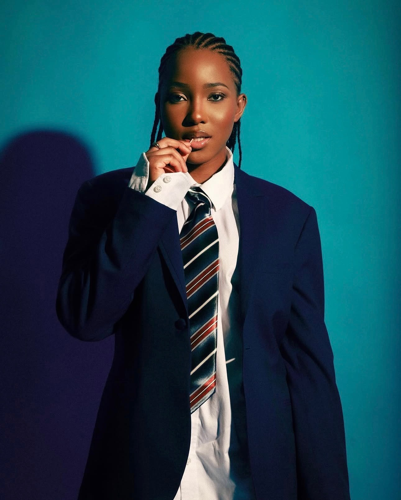
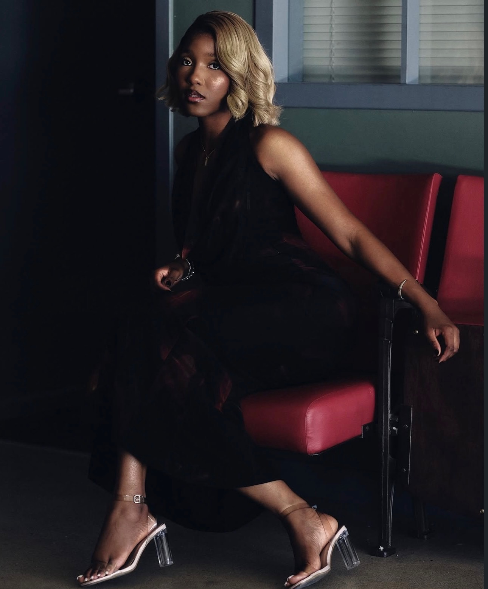
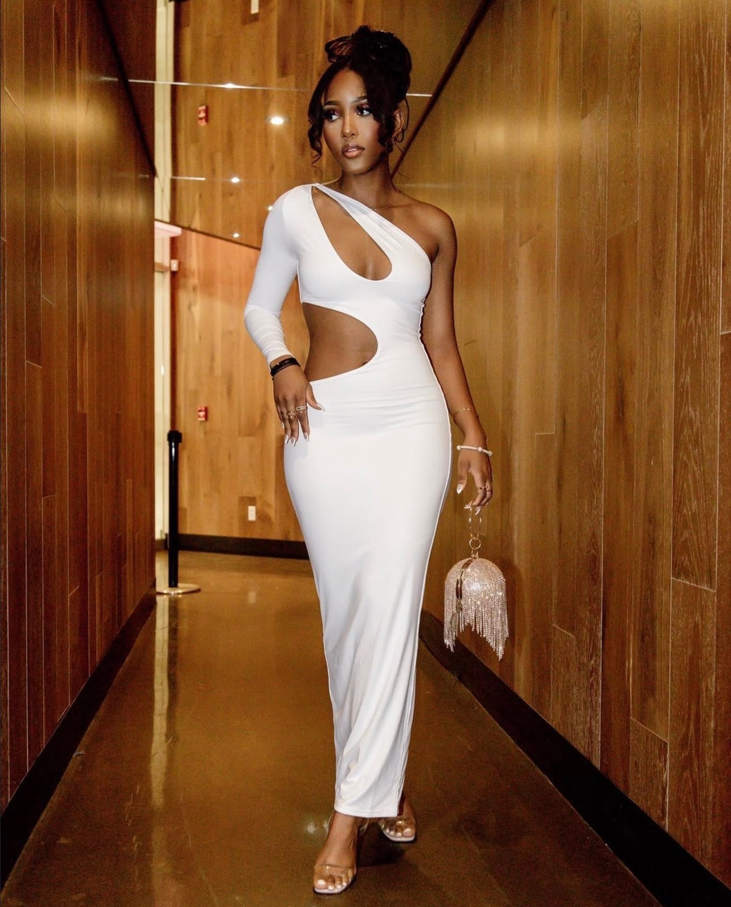

She loves to cook.
Especially Haitian comfort food — rice, lalo, sos pwa and légumes.
MEET WILDAÏNA
A psychology graduate, human relations officer, model, reader, writer, cook — and a proud daughter of Haiti.

HER STORY
Wildaïna Charles is 26, originally from Côtes-de-Fer, Haiti, and now living in Canada. She works in human relations and holds a bachelor's degree in psychology.
She enters Miss Universe Haiti 2026 with the intention to represent Haiti with honesty, discipline, joy and a deep sense of gratitude toward the people who have supported her.
BEYOND THE SASH
Especially Haitian comfort food — rice, lalo, sos pwa and légumes.
Order, detail and discipline are part of her personality.
Nickenson P., Tijo Zenny, Top Adlerman, Barikad Crew — plus a lot of Afrobeats.
Coupé Cloué, Mizik Mizik, Yole Dérose and A. Dorval are among the Haitian classics she loves.
She is deeply thankful for people — and she loves teasing those closest to her.
LIFE, CULTURE & JOY
She loves kenèp, cooking, the gym, modeling, reading and writing. Music follows her everywhere — from Haitian classics and HMI to Barikad Crew and Afrobeats. Her goal is not simply achievement; it is a meaningful, happy life.

